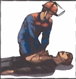
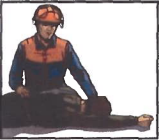
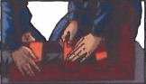
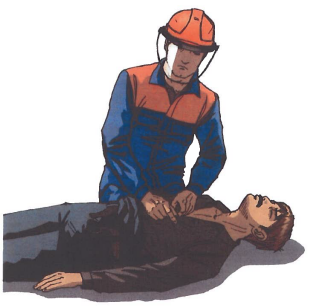
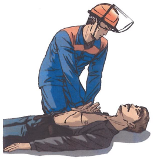
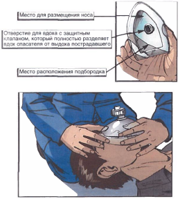
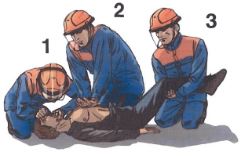

В процессе работы НЕ ДОПУСКАЕТСЯ:
В случае отказа переносного электроинструмента и светильников, сообщить о неисправности непосредственному руководителю (мастеру).
5.1. Рациональное освещение - один из основных факторов создания благоприятных условий труда. Недостаточная освещенность вызывает преждевременное утомление работающего, снижает производительность труда, притупляет внимание и может оказаться причиной несчастного случая.
5.2. Значение освещенности (норма освещенности) не является одинаковым для всех производственных процессов и зависит от характера выполняемой работы. Достаточная освещенность и равномерность освещения, отсутствие резких теней и бликов - выполнение этих требований способствует хорошей видимости на рабочих местах, уменьшает утомление зрения.
5.3. В дневное время суток используется естественное освещение, которое создается через оконные и другие стеклянные проемы. Если естественного освещения недостаточно, оно дополняется искусственным. Естественное (дневное) освещение оказывает благоприятное физиологическое воздействие на организм человека, поэтому все производственные, бытовые, административно-хозяйственные помещения должны иметь непосредственное естественное освещение. Окна, обращенные на солнечную сторону, должны быть оснащены устройствами для защиты от прямых солнечных лучей. Световые проемы верхних фонарей должны быть застеклены армированным стеклом или под фонарем должны быть подвешены металлические сетки для защиты от возможного выпадения стекол.
5.4. За чистотой осветительного оборудования (окнами, светильниками) необходимо вести систематический надзор. Чистое оконное стекло пропускает 90% светового потока, а сильно загрязненное - всего 82%. Необходимо своевременно менять перегоревшие лампы, очищать запыленные и загрязненные светильники, регулярно устранять загрязнения стен и потолка, снижающие отражение светового потока, а тем самым и освещенность помещения. Мытье и чистку окон, световых фонарей необходимо проводить систематически не реже 2-х раз в год, а в запыленных помещениях - чаще, по мере необходимости не менее 4-х раз.
5.5. Если работа связана с блестящими деталями, поток любого света должен быть смягчен и рассеян. При работе сварщика под открытым небом в солнечный день следует сменить его рабочее место, иначе очками пользоваться будет трудно, так как сила света пламени горелки поглощается общим световым потоком.
5.6. Если надо создать высокие уровни освещенности, применяется система комбинированного освещения (общее и локализированное).
5.7. В производственных помещениях, помимо основного рабочего освещения, должно быть и аварийное (из расчета 5% от нормированной освещенности), обеспечивающее возможность безопасной эвакуации людей из помещений и продолжения работы при отключении рабочего освещения.
5.8. Для качественного освещения рабочего места должны быть правильно выбраны: тип светильника, место его крепления, направление светового потока, мощность ламп, высота подвеса светильника.
5.9. На сверлильном станке, ремонтном участке и т.д. помимо общего необходимо предусматривать и местное освещение для того, чтобы создать определенное направление светового потока. Наилучшее направление светового потока на обрабатываемое изделие, ремонтируемые детали или агрегат достигается при креплении светильника у рабочего места на кронштейне, позволяющем перемещать светильник в необходимом направлении.
5.10. Светильники общего и местного освещения, подвешенные ниже 2,5 м от уровня пола, должны иметь напряжение не выше 42В.
5.11. Необходимо рационально устанавливать светильники непосредственно на корпусе того или иного оборудования - на верстаках, различных приспособлениях, станках и т.д.
5.12. Конструкция переносного светильника должна исключать всякую возможность прикосновения к токоведущим частям. Патрон должен быть укреплен к рукоятке, выполненной из прочного тепло- и влагостойкого изолирующего материала. Светильник должен иметь предохранительную сетку, укрепленную не на патроне, а на рукоятке для того, чтобы сетка не могла оказаться под напряжением при повреждении патрона, а при работе в сырых местах - стеклянный колпак. Кроме того, светильник должен иметь отражатель для направления света, а также крючки и захваты для подвески его в удобном положении.
1.2. К проверкам и техническому обслуживанию допускается оперативно-ремонтный персонал прошедший подготовку, включающую практическое обучение работам с ВЗЭО.
1.3. Проверка ВЗЭО по уровню проведения подразделяются на визуальные, непосредственные и детальные; по времени проведения - на первичные, периодические и выборочные.
1.4. Визуальную и непосредственную проверку можно проводить на работающем или присоединенном к источнику питания электрооборудовании с соблюдением правил техники безопасности.
1.5. Детальная проверка проводится на остановленном и отключенном от источника питания электрооборудовании.
1.6. Первичная (детальная) проверка проводится перед вводом ВЗЭО в эксплуатацию.
1.7. Периодическая проверка (визуальная или непосредственная) проводится на плановой основе для поддержания взрывозащиты ВЗЭО в удовлетворительном состоянии.
1.8. Выборочная проверка проводится на части установленного оборудования, определяемая с учетом цели проверки.
2.3. Детальная проверка проводится при техническом обслуживании и текущем ремонте средств автоматизации и включает в себя выявление дефектов, которые обнаруживаются только после вскрытия защитной оболочки с применением инструментов и дополнительного оборудования.
2.5. При детальной проверке ВЗЭО с видом взрывозащиты «взрывонепроницаемая оболочка» дополнительно к проверкам указанным в пункте 2.4. проверяют:
2.7. При детальной проверке ВЗЭО с видом взрывозащиты «искробезопасная электрическая цепь» дополнительно к указанным в пункте 2.6. проверяют:
19. Действия в случае сильных болей в груди:
Внимание! Учитывая опасность возникновения инфаркта миокарда, оказание первой помощи следует начинать с немедленного вызова врача.
1) Усадить или уложить больного.
2) Освободить больного от стесняющей шею одежды.
3) Уточнить у больного возможную причину боли в грудной клетке (травма, приступ стенокардии). Узнать, болеет ли он хроническими заболеваниями сердца.
4) В случае стенокардии больной обычно имеет при себе препараты для купирования приступа (нитроглицерин, валидол, нитросорбид), о чем необходимо его спросить и помочь ему принять лекарства.
Если появилась одышка, чувство нехватки воздуха? Усадить больного, приложить к ногам теплую грелку.
Если больной потерял сознание и у него исчез пульс на сонной артерии? Приступить к реанимации.
3.4. Условия, при которых персонал не может быть допущен к работе с отходами:
3.4.1. Отсутствие необходимой спецодежды и средств индивидуальной защиты;
3.4.2. Болезненное состояние.
4.2 Последовательность действий при оказании первой медицинской помощи:
Такая очередность действий позволит сохранить жизнь пострадавшего до прибытия медицинских работников |
|||
1. |
Нет сознания и нет пульса на сонной артерии (клиническая смерть) |
 | Приступить к реанимации (см. п.5) |
2. |
Нет сознания, но есть пульс на сонной артерии (обморок или начало развития комы) |
 | Попытаться привести пострадавшего в сознание (см. п.6) Если в течени 3-4 минут это не удалось, обязательно повернуть его на живот (см. п.7) |
3. |
Обильное кровотечение |
|
Быстро пережать конечность выше раны и наложить жгут (см. п.9) |
4. |
Наличие раны |
|
Наложить стерильные повязки (см. п.10.3) |
5. |
Признаки перелома конечностей |
 |
Наложить транспортную шину (см. п.11) |
5. Правила определения признаков клинической смерти:
Правило первое.
Чтобы сделать вывод о наступлении клинической смерти у неподвижно лежащего пострадавшего, достаточно убедиться в отсутствии сознания и пульса на сонной артерии.
Правило второе.
Не следует терять время на определение сознания путем ожидания ответов на вопросы: «Все ли у тебя в порядке? Можно ли приступить к оказанию помощи?». Надавливание на шею в области сонной артерии является сильным болевым раздражителем.
Правило третье.
Не следует терять время на определение признаков дыхания. Они трудноуловимы, и на их определение с помощью ворсинок ватки, зеркальца или наблюдения за движением грудной клетки можно потерять неоправданно много времени. Самостоятельное дыхание без пульса на сонной артерии продолжается не более минуты, а вдох искусственного дыхания взрослому человеку ни при каких обстоятельствах не может причинить вреда.
Если подтвердились признаки клинической смерти? Быстро освободить грудную клетку от одежды приступить к сердечно-легочной реанимации см. пп.5.5; 5.6.
5.1. Правила определения пульса на сонной артерии:
Правило первое.
Расположить четыре пальца на шее пострадавшего (см. п.5.4) и убедиться в отсутствии пульса на сонной артерии.
Правило второе.
Определять пульс следует не менее 10 секунд.
5.2. Правила освобождения грудной клетки от одежды для проведения реанимации:
Правило первое.
Расстегнуть пуговицы рубашки и освободить грудную клетку.
Правило второе.
Джемпер, свитер или водолазку приподнять и сдвинуть к шее.
Правило третье.
Майку, футболку или любое нательное белье из тонкой ткани можно не снимать. Но прежде чем наносить удар по грудине или приступать к непрямому массажу сердца, следует убедиться, что под тканью нет нательного крестика или кулона.
Правило четвертое.
Поясной ремень обязательно расстегнуть или ослабить. Известны случаи, когда во время проведения непрямого массажа сердца печень повреждалась о край жесткого ремня.
Внимание! Перед тем как приступить к реанимации, необходимо уложить пострадавшего на жесткую и ровную поверхность, освободить грудную клетку от одежды и определить анатомические ориентиры (см. п. 5.4).
5.3. Правила освобождения грудной клетки от одежды для проведения реанимации, в случаях, когда на женщине надет бюстгальтер - его надо сдвинуть ближе к шее.
5.4. Анатомические ориентиры, необходимые для проведения сердечно-легочной реанимации:

5.5. Правила проведения непрямого массажа сердца и безвентиляционной реанимации:
Правило первое.
Расположить основание правой ладони выше мечевидного отростка так, чтобы большой палец был направлен на подбородок или живот пострадавшего. Левую ладонь расположить на ладони правой руки.
Правило второе.
Переместить центр тяжести на грудину пострадавшего и проводить непрямой массаж сердца прямыми руками.
Правило третье.
Продавливать грудную клетку не менее чем на 3-5 см с частотой не реже 60 раз в минуту.
Правило четвертое.
Каждое следующее надавливание начинать только после того, как грудная клетка вернется в исходное положение.
Правило пятое.
Оптимальное соотношение надавливаний на грудную клетку и вдохов искусственной вентиляции легких - 30:2, независимо от количества участников реанимации.
Правило шестое.
По возможности приложить холод к голове.
Внимание! При каждом надавливании на грудную клетку происходит активный выдох, а при ее возвращении в исходное положение — пассивный вдох. Когда выделения изо рта пострадавшего представляют угрозу для здоровья спасающего, можно ограничиться проведением непрямого массажа сердца, т.е. безвентиляционным вариантом реанимации.
Внимание! Чтобы непрямой массаж сердца был эффективным, его необходимо проводить на ровной жесткой поверхности.
Если под ладонью появился неприятный хруст (признак перелома ребер)? Уменьшить не глубину и силу, а ритм надавливаний и ни в коем случае не прекращать непрямой массаж сердца.
5.6. Правила проведения вдоха искусственной вентиляции легких (далее - ИВЛ) способом «изо рта в рот»:
Правило первое.
Правой рукой обхватить подбородок так, чтобы пальцы, расположенные на нижней челюсти и щеках пострадавшего, смогли разжать и раздвинуть его губы.
Правило второе.
Левой рукой зажать нос.
Правило третье.
Запрокинуть голову пострадавшего и удерживать ее в таком положении до окончания проведения вдоха.
Правило четвертое.
Плотно прижаться губами к губам пострадавшего и сделать в него максимальный выдох. Если во время проведения вдоха ИВЛ пальцы правой руки почувствуют раздувание щек, можно сделать безошибочный вывод о неэффективности попытки вдоха.
Правило пятое.
Если первая попытка вдоха ИВЛ оказалась неудачной, следует увеличить угол запрокидывания головы и сделать повторную попытку.
Правило шестое.
Если вторая попытка вдоха ИВЛ оказалась неудачной, то необходимо сделать 30 надавливаний на грудину, повернуть пострадавшего на живот, очистить пальцами ротовую полость и только затем сделать вдох ИВЛ.
Внимание! Нет необходимости разжимать челюсти пострадавшего, так как зубы не препятствуют прохождению воздуха. Достаточно разжать только губы.
Если невозможно преодолеть чувство брезгливости или выделения изо рта пострадавшего представляют угрозу для здоровья спасателя? Следует использовать специальную пластиковую маску для проведения ИВЛ способом «изо рта в рот».
5.6.1. Правила использования защитной маски для безопасного проведения ИВЛ:
Внимание! Когда контакт с выделениями из ротовой полости пострадавшего представляет угрозу инфицирования, отравления ядовитыми газами, искусственное дыхание можно проводить только через специальную защитную маску.
Правило первое.
Правильно взять маску в правую руку. Захватить ее пальцами правой руки так, чтобы большая часть ладони осталась свободной.
Правило второе.
Свободной частью ладони обхватить подбородок. Придерживая пальцами маску на лице, запрокинуть голову пострадавшего.
Правило третье.
Левой рукой прижать маску к лицу.
Правило четвертое.
Прижаться губами к отверстию с защитным клапаном и сделать в него выдох.
Когда проведение ИВЛ «изо рта в рот» представляет угрозу для здоровья спасателя, а защитной маски нет? Проводить непрямой массаж сердца - безвентиляционную реанимацию (см. п.5.5) - до прибытия медицинского персонала или появления защитной маски.
5.7. Правила проведения реанимации более 10-15 минут:
Внимание! Мужчина со средними физическими данными может проводить комплекс сердечно-легочной реанимации не более 3-4 минут. Вдвоем с помощником - не более 10 минут. Втроем — с лицами любого пола, возраста и физических данных - более часа.
Правило первое.
Первый участник делает вдох искусственного дыхания. Контролирует реакцию зрачков и пульс на сонной артерии и информирует партнеров о состоянии пострадавшего: «Есть реакция зрачков!» или «Есть пульс!» и т.п.
Правило второе.
Второй участник проводит непрямой массаж сердца и отдает команду: «Вдох!». Контролирует эффективность вдоха искусственного дыхания по подъему грудной клетки и констатирует: «Вдох прошел!» или «Нет вдоха!».
Правило третье.
Третий участник приподнимает ноги пострадавшего для улучшения притока крови к сердцу. Восстанавливает силы и готовится сменить второго участника. Координирует действия.
Правило четвертое.
Через каждые 2-3 минуты реанимации обязательно производится смена участников и проверяется наличие самостоятельного пульса.
Правило пятое.
По возможности приложить холод к голове пострадавшего.
5.8. Правила расположения участников реанимации:
Внимание! Такое расположение участников позволяет:
Сначала новичку следует доверить поддерживание ног, а затем задействовать в проведении реанимации.
5.9. Правила проведения реанимации в ограниченном пространстве:
Правило первое.
Комплекс реанимации можно проводить только в положении пострадавшего лежа на спине, на ровной жесткой поверхности.
Правило второе.
Обеспечить возможность запрокидывания головы пострадавшего для проведения ИВЛ.